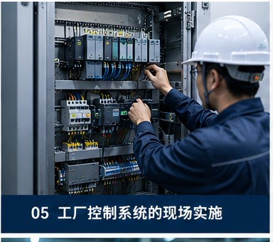
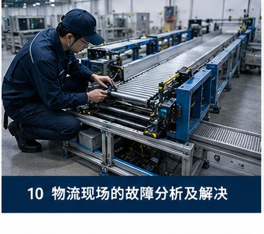
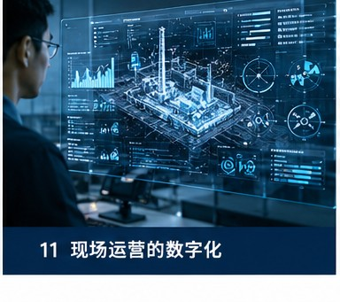

サービス一覧
現場インフラからシステム実装、運用最適化まで——全方位を支援します。
1 現場インフラ実施支援
ネットワーク・光ファイバー・セキュリティ・機器設置——現場を計画通り安定して進めます。

ネットワーク配線施工
データセンター、オフィスビル、工場の総合配線施工。Cat6A/Cat7銅線ケーブル配線、光ファイバー融着と端末処理、配線パネル整理と識別、ラッキングとケーブルマネジメント、テスト認証とレポート納品を含みます。

光ファイバー敷設工事
建物内外の光ケーブル敷設と接続。シングルモード/マルチモード光ケーブル施工、架空/管路/トレイ敷設、光ファイバー融着とOTDRテスト、ODF架設置と成端、幹線光ケーブル導入と中間配線を含みます。

セキュリティ弱電工事
監視カメラシステム、入退管理システム、入退管理機器の現場設置と実装。カメラ設置と調整、入退管理システム配線、ネットワーク機器ラック設置、現場弱電配管敷設とテストを含みます。

機器設置と設定
通信機器及びサーバーラックの現場設置。機器のラッキングと設置、電源と接地工事、ネットワーク接続と導通確認、ラベル整理とドキュメント納品、現場環境への適合と調整を含みます。
2 システム製品の現場実装支援
制御システム・ロボット・情報システム——技術製品を実際の現場で実装します。

工場制御システムの現場実装
PLC及び各種制御システムの現場設置と調整。制御盤組立と配線、現場計器とセンサー配線、上位機とコントローラーの通信確認、I/Oテストと連動調整、現場検収とドキュメント納品を含みます。

物流ロボットの導入
AGV/AMR及びその他の物流ロボットの現場導入支援。現場環境調査と走行ルート確認、ステーションと充電ステーション設置、システムと上位スケジューリングシステムの連動調整、現場安全確認、試運転支援と操作トレーニングを含みます。
既存ERP情報システムの改修
既存ERPシステムのアップグレードと改修の現場支援。サーバーとクライアント環境確認、ネットワーク設定と通信テスト、データ移行と検証、切替作業の現場サポート、新システム導入後の動作確認を含みます。

設備監視システムの通信テスト
各種設備監視システムの通信確認と現場検証。現場機器と監視システム間の通信テスト、ネットワークパス確認、プロトコルと通信パラメータ設定、データ収集検証、通信異常の調査とレポートを含みます。
3 現場運用の継続的改善支援
調査・故障分析・デジタル化・システム評価——現場の継続的改善を支援します。

製造現場の問題調査と解決
システム製品は通常、現場からのデータフィードバックが必要です。私たちは製造現場に深く入り込み、実際の稼働状態を調査し、隠れた問題を発見し、実行可能な改善策を提供します。

物流現場の故障分析と解決
自動化システムに障害が発生すると、生産ラインが停止します。私たちは故障原因を分析し、根本問題を特定し、停止問題を解決して現場の安定稼働を回復します。

現場運用のデジタル化
重要なデータを記録し、AI分析を通じて改善の好循環を形成します。現場の経験を再利用可能なデータ資産に変換し、運用効率を継続的に向上させます。

システムの更新要否判断
システムの更新要否の判断、優れたデータと経験の継承方法。現場の実際の運用観点からシステム寿命を評価し、合理的なアップグレードと移行計画を策定します。